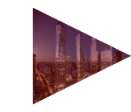

À propos de l’exposition

L’exposition Rogers se déroule à la Fondation Cartier :
261, boulevard Raspail, 75014 Paris
du 13 avril au 23 juin 2024
Elle présente le travail de Richard Rogers, depuis les premières réalisations dans les années 1960, jusqu’aux projets actuels de l’Agence Rogers Stirk Harbour + Partners.
Informations pratiques

Horaires d’ouverture :
Tous les jours de 11h à 20h, sauf le lundi. Nocturne le mardi, jusqu’à 22h. La fermeture des salles débute à 19h45 (21h45 les mardis).
Tarifs :
plein tarif : 11 €
tarif réduit : 7,50 €
Réduction 13 - 25 ans : 5€
Fondation Cartier Pass : 18€ - 50€
Gratuit pour les moins de 13 ans, les détenteurs d’un Laissez-passer annuel, d’une carte Icom, d’une carte de presse, d’une carte d’invalidité, d’un Fondation Cartier Pass, et les étudiants.